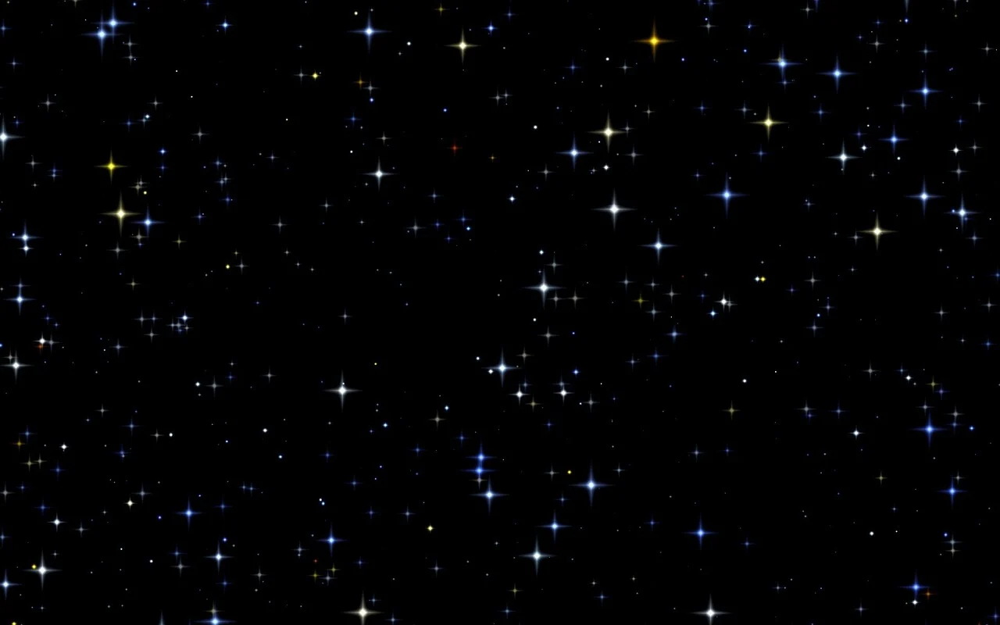

Welcome to DarkStar! This application will assist in determining your precise location from a simple picture of the sky. Usage of this app, is very simple. Follow the directions below after taking a photograph of the night sky.
Enter a photograph of a star field; drag and drop
Enter time (UTC / Zulu) picture was taken (HH:MM:SS):
Plot location on map
Enter coordinates directly:
N:
W: